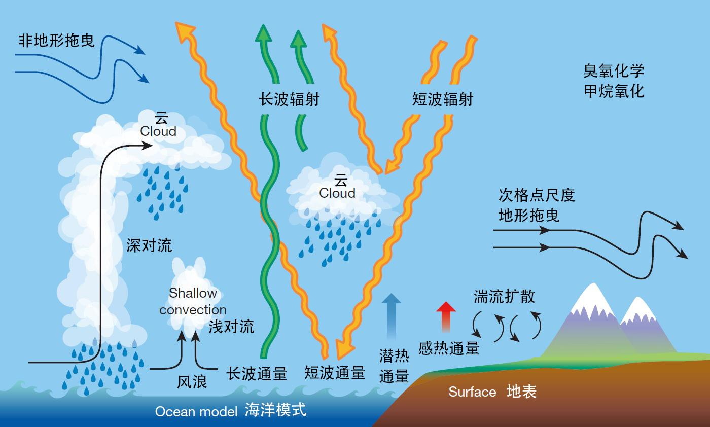
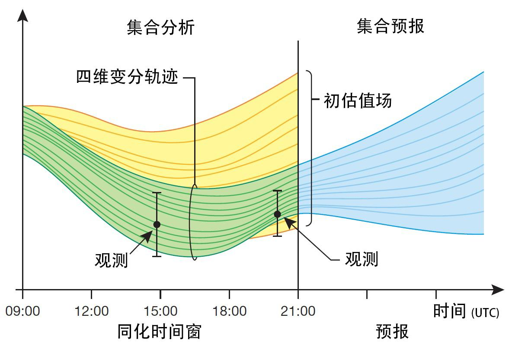
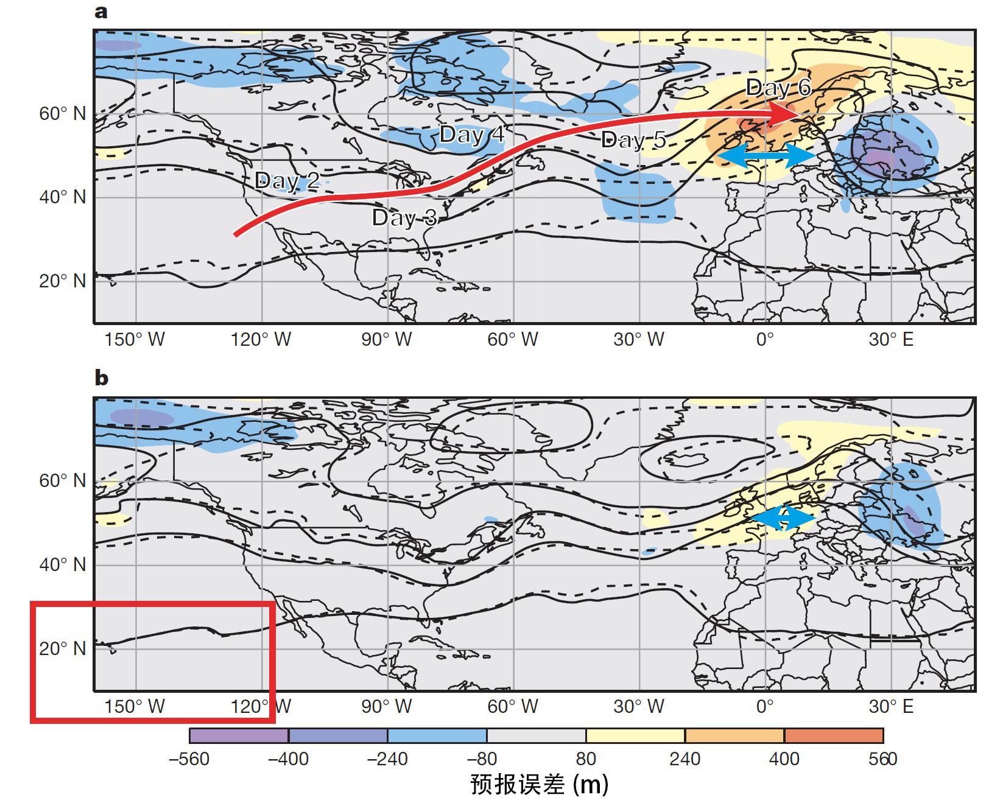
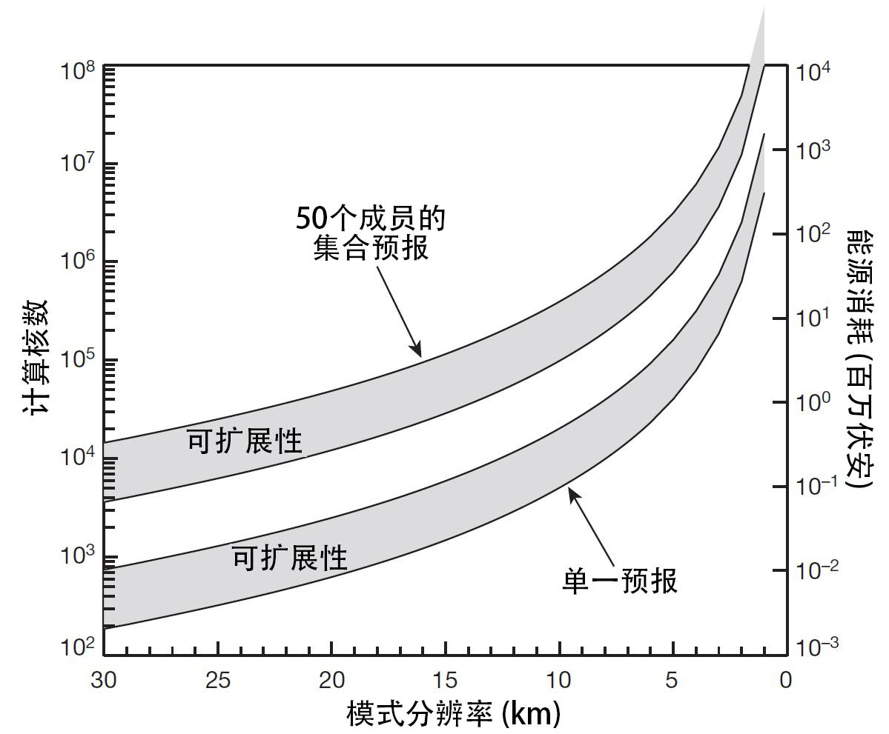
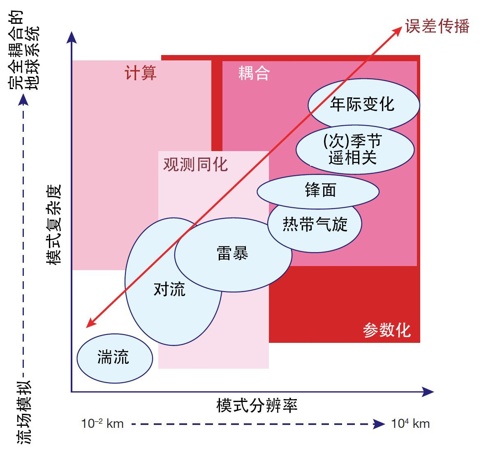

《自然》综述：数值天气预报的寂静革命
来自知乎网友翻译（https://www.zhihu.com/column/p/21716623）
原文 Bauer, P., Thorpe, A. & Brunet, G. The quiet revolution of numerical weather prediction. Nature 525, 47–55 (2015). https://doi.org/10.1038/nature14956
http://www.nature.com/nature/journal/v525/n7567/full/nature14956.html
摘要
数值天气预报的发展如同一次寂静革命，来自于多年以来科学知识和技术发展的持续积累，而且除了少数例外以外与物理的突破并无联系。但是，数值天气预报是所有物理科学中影响最大的领域之一。作为一个计算问题，全球天气预报与对人脑和宇宙早期演化的模拟水平相当，并且每天都在世界各地主要的业务预报中心运行。
（译注：寂静革命（法语：Révolution tranquille），指加拿大魁北克在1960年代社会迅速变革的一段时期。变革内容包括社会的世俗化、地方福利的建立和分离主义与联邦主义政治势力的重组。寂静革命是一段经济和社会均不受控制的变革，同样的变革也同时发生在其它西方世界里。）
正文
在19世纪与20世纪之交，Abbe和Bjerknes都提出，物理学的定律可以被用于预报天气；他们认识到对大气状况的预报可以被视作数学物理的初值问题，未来的天气可以使用偏微分控制方程从观测到的当前的天气向前积分得到。这一主张即使以最乐观的牛顿主义决定论的观点来解读也是极为大胆的，因为当时鲜少有对大气状况的日常观测，没有计算机，人们对天气过程是否有任何显着程度的可预报性也知之甚少。但在一百多年之后的今天，这一范式已经变成每天求解从初始时刻到数周甚至数月之后、每个时间步长有着五亿个空间格点、综合考虑空间尺度延伸几百米到几千公里、时间尺度遍及几秒到几周的动力学、热力学、辐射和化学过程的一组非线性微分方程的问题。
科学知识的一个检验标准是能否准确预测一个实验的结果。在气象学的领域，这就变成了天气预报的准确性问题。此外，如今的数值天气预报还让预报员能够定量评估任何特定预报的可信度。这是一个通过应用经典物理学定律获得科学领域重要而意义深远的成功的故事。很明显，这一成功既需要技术的敏锐性，又需要科学进步的前瞻性。
准确的天气预报能够拯救生命、辅佐应急管理、在灾害天气事件中减轻影响、避免经济损失，还能创造持续不断地财政收入——例如能源、农业、交通和娱乐行业。天气预报的潜在利益远远超过对相关基础科学研究、超算设备、卫星和其它观测程序等用于产生天气预报的领域的投资。
这些科学和技术领域的发展带来了过去40年间天气预报水平的提高。重要的是，天气预报水平可以客观、定量地加以评估，因为我们每天都在将预报和实际发生的天气加以比较。例如，3到10天的天气预报的预报技巧每十年就能提高大约一天的水平：如图1所示，如今6天预报的水平跟十年前5天预报的准确程度相当。受益于能够提供全球观测的卫星数据的高效实用，如今北半球和南半球的预报水平已经几乎相同。

图1. 以热带以外的北半球和南半球计算的三天、五天、七天和十天的预报技巧。预报技巧是在500百帕高度层上的预报和用于验证的分析场各自对气候平均高度的异常之间的相关性。超过60%的数值表示可用的预报，超过80%的数值表示准确度很高。1999年之后北半球和南半球曲线的收敛是由于使用变分方法处理卫星资料带来的突破。
不过，对社会来说，更引人注目的是极端天气事件。2012年10月飓风Sandy不同寻常的路径和强度提前8天就预报出来了，2010年俄罗斯的酷暑与2013年美国的凛冬的预报都提前了一到两周，而与厄尔尼诺/南方涛动（ENSO）相关的热带海表温度变化能提前三到四个月加以预报。天气和气候的预报技巧有着密切的联系，因为准确的气候预报依赖于对天气状况及其统计特征的优良体现，因为在所有预报时长范围内最根本的物理定律是相同的。
这篇综述会解释数值天气预报最基础的科学根据，随后会着重介绍之前预报技巧受益最多的三个领域——对物理过程的代表，集合预报和模式初始化。这也是提出了接下来的十年中最有挑战性的科学问题的领域，但是以1 km的水平分辨率、也即比现在精细一个数量级的水平运行全球模式的展望也增加了新的影响因素，因为这需要对使用目前还不存在的技术的高性能计算设备进行投资。
1. 天气预报的物理学
纳维-斯托克斯方程、考虑地球自转的影响的质量连续性方程和热力学第一定律、理想气体方程一起构成了一组完整的大气预报方程，大气中的风场、气压场、密度场合温度场的时空变化都可以用这组方程加以描述。这些方程需要在时间和空间离散化之后以数值方法求解，因为这组方程的解析解在数学上极难获得，而这一近似（译注：指原始偏微分方程近似为离散化的差分方程）造成了通常所谓可解析与不可解析的运动尺度之间的差异。在不可解析的尺度直到分子尺度发生的物理过程会通过摩擦、凝结和蒸发一类的湿过程和辐射加热与冷却作为质量、动量和热量的源项进入可解析尺度的方程中。由于这些过程通常都无法解析，它们需要按照与可解析尺度的相互作用被“参数化”。为了便利地进行数值求解和多少降低一些方程组的复杂程度，有时候也会对方程组进行一些简化，这也是Richardson最早提出数值天气预报时的想法，虽然他并不十分成功。通过引入能够对大气中最大尺度的运动进行精确描述的近似，1950年在普林斯顿大学人们使用第一台电子计算机（译注：即ENIAC）第一次尝试进行了天气预报。普林斯顿的模拟是一次追报（译注：指对之前的天气进行模拟预报），而第一次实时预报则于1954年出现于斯德哥尔摩。
随着20世纪70年代超算能力的增长，像Abbe和Bjerknes所提出的那样求解整套方程组成为了可能。从那之后，也出现了各种各样的数值求解方法，旨在解决数值稳定性、精度、计算速度和处理更多预报变量的多功能性，还有可解析与不可解析尺度之间的相互作用。这些方法的主要组成部分包括：对空间变化加以代表的空间离散化方法，时间积分方法，对边界的处理和初始化方法。求解整套方程组的能力奠定了数值天气预报的基础。今天，有着不同复杂程度的不同层次的多种模式覆盖了从全球气候预测、全球天气预报、灾害天气的局地模拟和空气质量预报的所有范围。
2. 主要的步伐
全球模式中对不可解析过程的代表的提高、能够估计预报不确定性的集合预报方法的出现和引入客观分析方法决定初始条件带来了我们今日所获得的预报技巧。对物理过程加以代表、集合模拟和模式初始化同样也是未来的主要挑战，此外也有与观测和计算相关的技术挑战，我们将会在后文加以讨论。
2.1 物理过程
参数化方案捕捉大气和大气与地面之间界面的辐射、对流和扩散效应，这些效应通常由相对较小的空间尺度所决定。图2描绘了这些过程以及它们如何在大气中起作用。虽然不能被数值模式解析，这些过程能在格点尺度上驱动热量和动量收支，对提高预报技巧至关重要。不同的物理过程的参数化程度和由此对基础物理过程的代表性千差万别。例如，全球模式中对辐射和云微物理过程的参数化方程与在区域模式和高分辨率模式中使用的方程相同，因为这些方程考虑最基础的小尺度物理过程，而这一过程在这些不同的模式空间尺度下是相似的，即使在更高的水平分辨率情况下需要额外的复杂度。参数化过程的方程主要受限于我们对用于参数化描述物理过程的细节的理解程度，这些参数化描述决定了这些物理过程对动量和热量通量的空间平均的影响。另一方面，深对流和特定的边界层过程需要更高程度的参数化方程，因为它们只在格点尺度的一小部分中出现；因此这些参数化方案敏感地取决于它们所使用的分辨率。

图2. 天气预报中重要的物理过程。这些过程在现在的数值天气预报模式中并没有被显式解析，而是通过描述它们对可解析尺度的质量、动量和热量传递的贡献的参数化方法加以表征。
参数化方案对决定预报技巧起到了根本性的作用，因为它们决定了所模拟的天气的关键特征，例如云和降水，当然还有温度和风。在业务数值天气预报模式中，本质上相同的参数化方程被用于10到100公里的水平尺度和短期到中期的预报、模式初始化所使用的最小化算法和季节尺度的预报。达成这一“格点尺度不变性”的要素同时又包含尽可能多的物理过程细节是近期最基础的突破。
2.2 集合模拟
在二十世纪之初，庞加莱就认为在初始条件中加入微小的扰动就会使非线性系统的预报变得极为不同，而这一困难可能会是限制预报技巧的基础。在20世纪50年代，Thompson第一次定量地估计了预报中的初始误差增长，而Lorenz则更为整体化地总结了这些知识，以他对量化大气可预报性的尝试为基础创立了混沌理论。他的结论认为不稳定系统有着有限的、取决于状态的可预报性的极限，由此产生了将初始条件不确定性的增长、它们随着大气状况的演变发展和不完美的模式所引入的误差加以削减的需求。承认天气预报不完美性、并确定如何通过集合的方法计算分析和预报的不确定性是物理科学领域的主要和独特的成就之一。对于降水这样的高变率参数的预报尤其如此（图3），集合发散度定量地描述了降水位置和强度的预报不确定性，为用户提供了重要的信息。

图3. 用于估计英国降水概率的36小时集合预报示意图。 单一预报（中间红框）通过将模式从初始大气状态分析场（左侧）向前进行时间积分获得。在已知的分析误差内的对分析场的小扰动能够提供一组预报解的集合，这一集合对预报的不确定性加以代表（中间的多个框）。将这些预报解以一些空间相邻采样方法相结合便可提供平滑的降水概率估计（右侧）。图片来自K. Mylne（英国气象办公室）。
系统的非线性复杂性意味着使用纯粹统计的方法给出预报的不确定性是不合适的。作为替代，我们需要有一个有着许多完整的、物理化的、非线性的系统具现的集合，以提供分析集合和预报集合的无缝衔接，这其中观测信息可用于减小不确定性。在实际操作中，集合成员通过在初始场和模式物理过程中增加与分析误差和模式误差相当的扰动而获得。一致性、持续性地生成这些扰动、以便让集合提供预报尺度的大范围内不确定性的优良估计是一个挑战，而数学和统计物理学专门技术的介入极为重要。如今的天气预报包括了一组数值天气预报的集合，提供概率性的预报结果。
2.3 模式初始化
早期用于确定初始条件的方法基于对天气图的分析。各种各样的插值方法后来被基于最优控制理论的资料同化技术所取代。对当前大气和地面状况（称为分析）的推导被视为使用观测资料、短期预报所提供的初始信息和它们的不确定性以及预报模式作为约束的贝叶斯反演问题。这些包括了全局最小化的计算在四维中进行，以生成在时间和空间上物理一致的分析，并能够处理大量的、时空分布不均匀的观测数据（例如自20世纪80年代开始用于地球观测的大量而多种多样的卫星数据）。由于初始条件不确定性的估计对集合预报很重要、并且资料同化使用了不完美的观测数据和预报模式，集合方法也成为了资料同化的一个组成部分，如图4所展示的那样。

图4. 集合分析和预报循环示意图。使用上一组分析集合初始化，生成某一时间窗内（如图中09:00 – 21:00 UTC）的全球集合预报轨迹。这组集合提供了对当前天气的估计（初估值场）。这组预报和可用的观测（表示为有误差范围的数据点）之间的差异是短期预报误差。通过使用变分技术在四维空间进行最小化，所生成的改进的估计（四维变分轨迹）与观测之间的距离被减小。下一个集合预报循环再从这一组改善过的分析场进行初始化。图片来自M Bonavita（欧洲中期天气预报中心）。
这些四维变分（4D-Var）资料同化方法的业务运行是全球业务数值天气预报中的里程碑。在欧洲中期天气预报中心（ECMWF）这一方法与1997年开始运行，随后是2000年的法国气象局（Météo-France）、2004年的英国气象办公室（Met Office）、2005年的日本气象厅（JMA）和加拿大环境部（Environment Canada）和2009年的美国海军研究实验室（NRL）。四维变分方法的发展和首次运行花费了超过10年时间，进一步的研究结果也在不断地改进其主要成分。这些包括将预报模式和运算高效的辐射传输模式相结合以更充分地利用卫星辐射数据、使用取决于状态的权重对短期预报和观测误差的特征进行更好的估计以及由物理参数化方案的显著进步带来的对观测的更好的使用。
3. 可预报性与预报技巧
地球系统的可预报性的根源是一个持续而重要的研究领域。预报未来的天气就像是一个战场，可预报之力与不可预报之力两军对垒。可预报性的根源包括对小尺度天气的大尺度强迫、不同地理区域的遥相关和可预报链和大气、陆面、植被、海冰和海面的相互作用在较长的时间尺度上的影响。不可预报性的根源包括小尺度里不稳定性引入的混沌的“噪音”和它们的能量的升尺度传播、与数值近似和物理近似相关的误差和不足的观测数量或糟糕的观测质量。框图1提供了这样一个遥相关和欧洲地区中期预报糟糕的预报表现的来源的例子。

框图1. 预报对初始条件和误差传播的敏感性。展示模式初始化对欧洲地区预报的长距离影响的地图。嵌图a是2014年2月15日大约5公里高度上气流的6天平均预报误差（彩色填色；500百帕气压层的高度，单位米），预报（实线等值线）和用于检验的分析场（虚线等值线）。在美国西部，高空急流向南延伸，与低空槽并置。红色长箭头是一个大气波动扰动随着西风气流的移动路径。大尺度偶极误差结构的出现表明预报和分析之间的滞后（蓝色双向箭头）。欧洲地区的巨大的预报误差主要是由于波的随时间增长的相位移动造成的。对波的传播的反向追踪发现赤道东太平洋（嵌图b的红框）可能使预报误差的来源所在地。这一区域有着非常大的24小时高层风场预报误差，因为此处风场观测极少。如果运行一个嵌图b中的红框区域向分析场松弛逼近而非在预报中自由发展的饰演的话，预报误差的初始误差被减小，六天之后欧洲地区预报和分析之间波的滞后也得以缩减（嵌图b中的蓝色双向箭头），预报误差只有大约原来的一半。这一实验表明了模式初始化的长距离影响和热带与中纬度之间的联系，并展示了在一周时间尺度的预报技巧能够如何提高。
这个“战斗”的结果可以描述为噪音在预报过程中非线性增长、并导致确定事物能够预报的时限的根本局限。小尺度事件的局限在几小时到几天之间，高影响灾害天气的准确和可信预报的时限大约是一到两周，大尺度的天气形势和流场的转变的预报能提前一个月，全球环流异常能提前一个季度加以预报。预报时间越长，预报技巧就越多地取决于异常，也即预报状态和模拟的气候平均态之间的差异，时空平均对于信号的识别也越重要。在短期预报里预报技巧存在于细节之中，而长期预报的技巧则与大尺度结构相关。因而，连续地横跨这么大时空范围的预报极限的预报能力取决于捕捉在差异非常大的时空尺度上的过程的能力。
相比于其他很多科学领域，数值天气预报的一个天然优势是它的技巧每天都在被覆盖全球地加以客观评估，预报的成功与否可以精确得知，提高预报技巧的途径可以有效地加以测试。我们通常使用平均和均方根误差之类的参量和高空或地面的预报与分析的异常的相关性对预报技巧加以评估。此外，还有着针对像是降水这样更容易变化的变量的评分。随着预报时间的增长，模式的偏差也会变得愈发显著。虽然可以借助以往的预报加以校准以减小模式偏差，在复杂的模式中确认偏差的来源依旧是数值天气预报的最主要的挑战之一，对气候的预报更是如此。使用资料同化统计特征的诊断方法能够对此有所帮助，因为大多数偏差的信号在分析场中和预报早期即已十分明显，虽然它们的量级还很小。这一方法同样能够给天气和气候研究带来益处。
由于数值天气预报包含了一组预报的集合，评估标准需要考虑概率分布的不同特征，例如平均误差和分布的陡峭程度。通过比较预报的概率分布和观测的出现频率，我们可以确定预报的可信度。由于集合被设计为用于提供极端天气状况的概率的重要信息，我们开始发展着眼于概率分布的尾部的评分，以考虑稀疏的统计特征。
此外，综合性的以特征为基础的评估方法已经被用于热带气旋和天气流场形势之中，以及评估模式对低纬和高纬、对流层和平流层、行星波活动驱动的天气尺度特征以及天气尺度与小尺度对流和地面之间相互作用的联系的代表性。
评估预报技巧的另一个有效方法来自于天气模拟和水文模拟的结合，对河流流量的预报能够帮助评估数值模式中降水和源汇，这一方法即可应用于单一模拟也可应用于集合预报。随着天气模式的增强，气溶胶和示踪气体这样的描述大气组分的变量的引入也通过研究示踪物的平流和模式化学参数化给大气演变的评估提供了新的方法。
4. 我们的现状
业务数值天气预报中心提供从每天多次的非常短期的千米尺度预报到每个月一次的水平分辨率几十公里的全球季节预报。这些预报与天气相关，也应用于空气质量和水文领域。
资料同化算法将预报模式和每天数千万量级的观测相结合，生成四维空间中物理一致的初始条件：覆盖全球，从地面到中间层（地面以上约80公里），使用从数小时到数天的时间窗。业务模式频繁升级以引进新技术，这些技术或者能够提高对模式物理过程和不确定性的代表、或者提供了不同的数值算法和观测数据用法、或者提高了计算效率。
在评估模式发展的不同领域对天气预报的成功和提升的贡献的时候，资料同化方法和观测数据的使用很难加以区分，因为它们相互密切关联。更精确的模式物理过程意味着预报能够更好地吻合观测、促进资料同化的提高；这又反过来使得更多的观测能够被吸收，进一步改善预报。
数值天气预报同样从计算机的进步中获益良多。以浮点运算为标准，自从20世纪80年代开始，计算能力每五年就增长一个数量级。这是处理器技术的进步和更多的处理器加以运用带来的。英特尔联合创始人Gordon Moore的定律认为，得益于每块芯片上晶体管密度和时钟速度的增长，计算能力每18个月就能翻一番。计算能力的增长与数值天气预报中分析和预报计算任务的数量增长齐头并进。在欧洲中期天气预报中心，资料同化在多个阶段中进行模式积分，总计要在12小时的同化时间窗内对6亿5千万的格点进行数百次迭代运算。与此同时，还有大约1千万个辐射运算将超过60个仪器的卫星观测数据和预报模式加以比较。如今，欧洲中期天气预报中心的16公里最高分辨率的模式对两百万个格点柱（译注：也即这一模式每一水平层有两百万个格点）进行计算，以10分钟的时间步长进行10天的预报，也即1440个时间步。相应的集合预报有50个集合成员，生成15到30天的预报，有着30到60公里的水平分辨率和30分钟的时间不长。这样每天两次，有大约四百亿个格点柱的运算在2.5小时内实时运算完毕。这一运算任务需要使用目前最强大的一些超算设备。
描述全球天气预报技巧的提高的时间序列令人印象深刻（图1），展现了在超过30年时间内，除了一些年际波动以外，预报技巧一直在提高。预报技巧提高的速度使得每十年的研究和发展就会使得预报范围延长一天。这一持续的发展得益于科学的进步以及观测和超算能力的利用。有些预报技巧的波动源于周期性的大气潜在的可预报性的增加或减少。这意味着有些天气状况比其它的更容易准确地提供更长时间的预报。我们对于这些天气状况的了解还在不断发展，也使得我们能够更有针对性地量化预报技巧。
5. 光明的未来
气象科学、高性能计算和观测系统的发展对数值天气预报的持续进步是决定性的。关键的科学和技术的十字路口要么已经达到，要么很有可能会在很近的未来达到。因此，当下对天气预报和气候学科未来将会如何发展有着根本性地影响。全球的天气和气候模拟在未来十年甚至更长时间的设想，建立于预期的对物理过程的理解的提升、数值模式的发展、观测技术和高性能运算的基础之上，将会是这样的：在分辨率方面，将能够运行全球的、水平分辨率在1公里量级的对流解析模拟；在复杂程度方面，将能够运行完全耦合的大气-陆地-海洋-海冰模式。有着此等分辨率和复杂程度的集合预报将能够提供动力学、物理学和化学甚至是部分生物化学过程的、从数个季度的天气到数十年的气候的概率预报。这些全球预报为在更高分辨率下有限地理区域内对短期天气演变的模拟提供了重要的初始和边界信息。
5.1 科学挑战
未来全球数值天气预报的主要科学挑战就是过去给数值预报带来主要进展、将天气预报引领至今天这个高度的几个主题：物理过程参数化、使用集合估计分析场和预报的不确定性以及使用观测为预报提供物理一致的初始条件。有许多关键领域可以预期未来的大量进展，与现在相比这些领域同样也需要显著的发展。
在物理参数化方面，有人可能会预期，随着分辨率的提高，对参数化的需求会逐渐降低。对于辐射、云过程和陆面模式，这是将现有的方案应用于已经在千米尺度的区域和局地模拟中加以使用的完全显式解析的模式的问题。对对流来说，情况会更加复杂，因为即使在当前的解析尺度上（15公里）已经会出现大型的热带对流云或者有组织的对流，而其中包含的小尺度对流卷即使在1公里尺度也无法解析、依旧需要进行参数化。这个能够部分解析对流的模式分辨率范围也被称为灰色地带，因为对通量的解析化贡献和参数化贡献需要定量并加以结合。现有的方案夹射对流完全不可解析，因而它们无法正确地描述同时出现的可解析和不可解析分量在灰色地带里可解析尺度的热量和动量的影响。
高分辨率有限区域云模式已经表明组织化的对流的动力模型可以被模式捕捉，对对流的生命史、云的组织或者它与大尺度环流的相互作用的模拟可以进一步提高。在目前，以1公里量级的分辨率运行全球模式能否去除与对流相关的不确定性、为减小模式偏差和提高所有时长范围的预报技巧提供基本的踏脚石依旧不甚清楚。由于这样的水平分辨率依旧无法达到，对流参数化对下一个十年里天气和气候的模拟依旧十分重要，在这一领域的进展需要气象界和气候界的合作。
此外还有两个领域，需要在未来给予更多的关注，有望显著提高预报技巧，同时也需要对科学发展和计算资源的持续投入。
第一，物理参数化方案内在的不确定性，无论是源于我们对物理过程了解的不完整、还是源于在可解析尺度上展示不可解析过程的影响的两难困境，都需要一个从根本上不一样的方法。参数化方案的元素或者整个方案都可能需要对大尺度而言统计性的组成部分，因为它们并非完全由可解析尺度决定。这方面的例子有对参数概率分布函数的随机取样、次网格模式的随机驱动或通过在次网格尺度内嵌入整个对流解析模拟的超级参数化方法。目前仍不知道这一方法需要从多大程度上与现有方案有所差异。
第二，添加更多的物理过程和化学过程。更多的物理过程源于大气与海洋、陆面和海冰模式的耦合，其中有些已经在业务运行之中。每种耦合都有其特征的空间和时间尺度，耦合本身带来的益处可能超过3到7天的范围，因为海洋、海冰和陆面过程相对较慢，主要影响长期的系统记忆。然而，有些例子也显示了耦合会对短期预报产生影响：例如，移动速度较慢的热带气旋的尾流中的上翻流会影响热带气旋的强度，陆地的降水会受到地面蒸发和土壤湿度的制约。
耦合的最大科学挑战在于匹配界面上的通量，在界面上每个组成部分的偏差会相互作用，产生模式冲击，在每个耦合时间步中改变平均场，通过长时间积分的反馈影响预报结果。
示踪气体和气溶胶这样的大气组分直接影响辐射加热，但是气溶胶同样能在成云过程中作为凝结核，非均相化学会在极地平流云的表面发生，加速臭氧的破坏。不过，气溶胶和示踪气体因其自身就对天气预报很重要，因为它们会影响空气质量。与增加更多的物理和化学过程相关的一个挑战是，模式初始条件中需要提供这些组分的信息，因此更多更复杂的观测需要被同化。中期以上的集合预报的可信度因此可以通过描述模式中复杂得多的过程的不确定性和能够使用更多种多样的观测对耦合模式初始化而得到提高。
使用更多的已存在的或新的观测以及资料同化的进步给数值天气预报提出了更多的科学挑战。目前每个全球预报只使用了大约5%到10%的卫星数据；这一比例已经包括了对这些预报有用的大部分信息。这一方法对全球对地球观测，尤其是卫星观测，的投入的最优化管理十分重要。然而，数值天气预报受限于不足的观测数据。除了维护能够提供温度和水汽的垂直廓线以及云和近地面天气的骨干卫星和地基观测系统以外，最基础的可观测量是缺失的。一个例子是使用多普勒雷达技术对高空风场进行直接观测，但是这一技术目前并未在业务卫星上加以应用。风场信息的需求主要在热带地区，这一区域覆盖了地球的50%的表面，而此处稀疏的观测是提高分析精度的障碍。然而，已有的骨干观测同样需要有可靠的、适应性强的观测系统提供，而这需要持续的国际投资和合作。卫星和地基观测同样需要相同级别的合作。
尽管现在的资料同化已经很复杂了，未来还有着许多的挑战，大多数与改进求解算法有关；这些算法将着眼于提高新观测数据的利用，同样也能够处理更好的模式。考虑到产生于报的很大一部分计算开支与资料同化相关，可用的计算资源将会继续成为约束条件。下一代的资料同化方法很可能会应用全新的数学原理，但是近未来的同化方法可能会以现有的原理为基础加以结合。
目前的算法多半依赖于线性原理和变分方法，而某些特定组成部分，例如误差的统计特征，是通过集合获得的。变分方法通过不同的“风格”加以应用，下一个十年内可能会被或者选择变分和集合的最有效率的结合方法、或者使用集合卡尔曼滤波这样完全基于集合的方法所主导。在较短的时间尺度上起作用的较小尺度的影响（例如对流）可能会需要非线性资料同化方法，而目前对这些方法只有有限的使用理想模式的研究实验。它们目前很难被扩展应用于全球业务应用之中。
耦合资料同化将对未来耦合模式的初始化至关重要。这一资料同化过程会需要包括大气组分（气溶胶，示踪气体）、海洋、陆面和海冰。每个地球系统的组成部分都有着独特的过程特征和时空尺度，而在一个统一的资料同化框架下对其加以处理将会极其充满挑战。
5.2 技术挑战
如今在数值天气预报领域所使用的最快的计算机在500强中名列前20，每秒浮点运算次数超过一千万亿次（10的15次方），每天使用一百万比特数量级的观测数据、生成一万亿（10的12次方）比特数量级的模式输出结果。未来的全球数值天气预报模式在水平方向分辨率达到公里量级，在大约100层垂直层的共计约五亿个格点上以数秒的时间步长对数量级为一百的预报变量进行积分，生成数量级为一百的集合成员，同时与维数稍低的陆面模式耦合。由于国际合作提供低轨和静止卫星上有数千个通道的高分辨率的光谱仪，观测数据的使用同样会增加一个数量级。
然而，对未来高性能计算技术发展的预期会给如何解决这些科学挑战带来新的制约。在过去，处理器的发展、存储容量和处理器时钟速度都遵循着摩尔定律发展。这一趋势在未来可能不会持续下去，因为能源需求需要降低。未来可能会更着重于发展并行计算，假如模式在更多的（不同种类相组合的）处理器上运行时求解时间能够获得收益，一个应用的“可扩展性”会因而变得重要。并行运行代码的不同部分的效益会受限于线性运行的部分，这也是从根本上限制可扩展性的要素，类似的还有在不同处理期间交换大量数据的需求。让数值天气预报代码变得更可扩展是接下来十年中优先级最高的事情之一。
对欧洲中期天气预报中心这样的数值天气预报中心来说，可负担的能源消耗的上限大约是两千万伏安。未来的数值天气预报系统的计算任务可能使现在的系统一百到一千倍，可能会需要十倍的能源。图5描绘了假定在现在的模式设计和可用的技术的情况下单一模拟和50个成员的集合的模式分辨率提高的时候计算核数和电力供应需求的增长。为了达到对解析对流活动至关重要的1到5公里的分辨率，我们将需要有着空前维度和运算量的高性能运算资源（假设使用传统技术）。

图5. 中央处理器和能源需求随数值天气预报模式分辨率的变化。在今天的模式代码和计算技术情况下单一的10天模式预报（下方曲线）和50个成员的集合预报（上方曲线）所需使用的简化的运算核数（左侧y轴）和能源（以百万伏安为单位，右侧y轴）随模式分辨率的变化。阴影区域表示完美扩展（阴影下方曲线）和低效扩展（阴影上方曲线）之间的范围。今天的单一全球预报大约在15公里分辨率运行，集合预报大约在30公里分辨率运行。
因此，我们需要改变现有的硬件、代码设计和数值方法。新技术将会把低能耗处理器与现在中央处理器的继任者结为一体并提供两者的好处——也就是说，在较低的时钟速度下数据交换很少、高度并行的计算性能，加上有着较大存储、快速数据交换和更高的时钟速度的中央处理器式的性能。代码设计和算法的选择必须要通过优化浮点运算性能和存储使用适应这一技术，而由于我们使用的是有数百万行、代代相传的程序，这一过程会充满挑战。在十年内，全球集合预报将会在十万到百万量级的处理器上运行。由于处理器一定会出错和不精确的低能耗硬件的出现，错误的发现和适应性管理将会至关重要。
对数据分发和存储的需求会进一步加剧计算上的挑战。虽然数据的增长看起来比计算资源的增长要慢，百亿亿（10的18次方）比特的数据生产可能会比百亿亿浮点运算能力更早到来。重新计算甚至比存储更加昂贵，因此以高优先级处理数据挑战是不可避免的。至于未来的处理器技术，数据传输带宽将会受到硬件的制约。偶尔出现的硬件失灵需要通过设计适应性存储系统加以处理。这些失灵同样对未来的工作流程的设计有着意义。更高级的数据压缩方法需要加以应用，并由气象界和气候界一同标准化并加以支持。
从未来的地球观测系统中会诞生许多的技术机遇和挑战。从高级的一方面说，新的卫星仪器技术将会越来越多地向有着数千个光谱通道、能够探测大气热力状况和组分高光谱辐射计和能探测地面特征、气溶胶、风场、水汽、云和降水的主动仪器（例如高分辨率雷达和激光）的方向发展。这两类仪器每天都能产生一千亿字节数量级的数据，这些数据需要在几个小时内下行、预处理并分发以供预报系统使用。这些数据的分发和存储需要像模式输出结果一样使用并行的方法加以管理。只有在接受可能有“信息损失”的压缩之后，数据分发才会变得可行。从普通的一方面说，手机这样的日用设备对气象观测来说虽然精度不足但是采样率很高，虽然这方面的工作刚刚开始，但是这为特定区域的高密度观测网提供了潜力。
很显然，在很多领域，科学和技术的挑战是相互联系的。计算和数据处理的效率给需要在有限的时间表内完成的天气和气候模式的复杂程度设定了硬边界，在全球尺度运行1公里对流解析尺度的模拟充满挑战。科学和计算能力之间的权衡早已不是新鲜事，而“可扩展性”为这一问题增加了新的难度。
数值天气预报的寂静革命需要将科学、观测和计算机技术的进步相结合。这一结合同样出现去其它需要解决大型问题的自然科学之中，例如对人类大脑的神经连接的模拟或宇宙中星系的演变。科学与技术之间的跨学科研究才会带来进一步的发展。随着社会对更准确、更可靠的天气和气候信息的需求变得越来越紧迫，全球数值模式必须要变得更高分辨率、更复杂。全球数值天气预报的进步是可以达到的，但是需要在本文中概述的所有要素的协同发展，图6对此做出了示意性的总结。

图6. 未来数值天气预报的主要挑战领域。计算能力、参数化方案中对物理过程的代表性、地球系统不同部分的耦合、使用先进资料同化方法处理观测数据和使用集合方法一致性地描述不确定性及其在不同尺度之间的相互作用这些科学和技术方面的进步将会带来预报技巧的进步。椭圆以10米至10000公里之间的尺度为单位展示了数值天气预报中能被模式解析的关键现象及其所代表的从小尺度气流到完全耦合的地球系统之间模拟过程的复杂性。方框代表未来提高预报技巧最有挑战的复杂尺度区域。箭头表示误差在不同分辨率范围和地球系统组成部分之间传播的重要性。